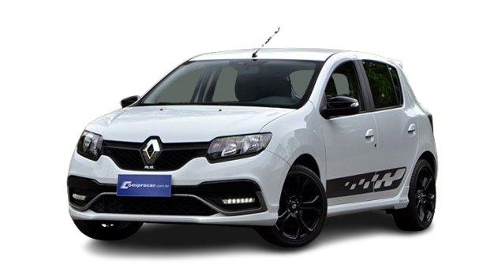

SANDERO RS
Com a atitude de um esportivo puro-sangue e a robustez para o dia a dia, o Sandero R.S. foi o legado francês para o asfalto brasileiro, que entregou diversão, controle e emoção sem abrir mão da praticidade.

HISTÓRIA
Sucesso no Brasil, o Sandero R.S. 2.0 foi lançado no mercado em 2015 e logo se tornou um esportivo desejado por quem busca por desempenho e prazer ao dirigir. Ao longo de sua trajetória no Brasil, teve mais de 4.600 unidades produzidas bem como teve séries limitadas desejadas, como a Racing Spirit, lançada em 2017.
O modelo foi desenvolvido pela Renault Sport, em conjunto com as equipes de design e engenharia da América Latina e se destacou por sua capacidade de proporcionar sensações esportivas desde o primeiro toque no acelerador, além de muito prazer na utilização diária.
A paixão pelo modelo também foi expressa pelos seus proprietários em diversos track days promovidos pela Renault ao longo de sua trajetória.
Em 2018, no R.S Track Day, ocorrido no Autódromo de Interlagos, 192 unidades do Sandero R.S. 2.0 foram reunidas, tornando-se o maior encontro de modelos da Renault Sport já feito no mundo.
Assim, o Sandero R.S. vem equipado de fábrica com um motor 2.0 litros, flex e aspirado. Com 150 cv de potência máxima, e 20,9 kgfm de torque, e motor faz par com um câmbio manual de seis marchas, onde as relações de marcha foram escolhidas para maior esportividade.
Assim, o modelo chega a máxima de 202 km/h, e acelera de 0 a 100 km/h em apenas 8 segundos
FICHA TECNICA
Modelo: Sandero RS
Ano: 2015-2022
Motor: 2.0 16V Flex
Potência: 150 cv(E)
Torque: 20,9 kgfm
0–100 km/h: 8 s
Vel. Máx: 202 km/h
Peso: 1.161 kg
Tração: Dianteira
Câmbio: Manual 6 marchas
Dimensões (C×L×A): 4.068×1.730×1.497 mm
CURIOSIDADE
Uma curiosidade marcante do Renault Sandero R.S. é que ele foi projetado e desenvolvido especificamente para o mercado latino-americano, com o Brasil sendo o primeiro país a produzi-lo e vendê-lo.
GALERIA
Imagens do Sandero RS
Canal: Carro Chefe